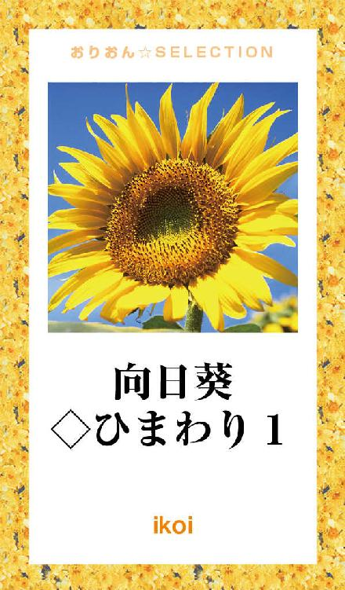
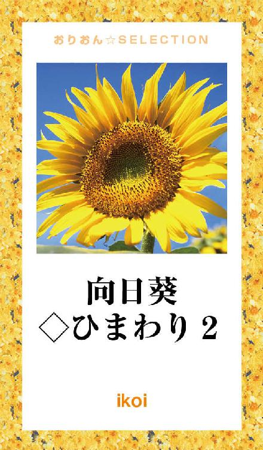

| 向日葵◇ひまわり 完全版 | |
| ikoi | |
この本は横書きでレイアウトされています。
また、ご覧になる機種により、表示の差が認められることがあります。

「あぁ～......
入学式なんてかったり～......」
大きな溜め息とともに
口をついて出た言葉
親が経営し、理事長を務め、
大学まである全寮制の
付属高校に、入学させられた
天空路 洸（コウ）は、
特別やりたいことも
目的もなく、ただなんとなく
過ごしていた。
親に反抗するのも面倒で
何もかもがつまらなく、
投げやりになっていた。
入学式も全く行く気が無く、
寮の部屋のベッドで
ゴロゴロしていた。
そしてもう一人......
《一面の向日葵畑......
うっすらと見える人影......
『ひまわり、ひまわり......
お日様みたいな笑顔が
大好きだよ
ひまわり......』
人影はスーっと消えて
いった......》
「お兄ちゃん？」
嘉藤ひまわりは、
寝ながら声に出していたで
あろう言葉に
ハッとして目を開け
辺りを見渡した。
夢か......
フゥと安堵したように息を吐き
そうだ、今日から
お兄ちゃんが通っていた高校での生活が始まるんだ。
まだ見慣れない広い
ワンルーム、バスもトイレも
家具も付いている、
豪華な寮の部屋を見て
思っていた。
手早く準備を済ませた
ひまわりは
「行って来ます！」
笑顔で
机の上の写真立ての中の
穏やかな微笑みを湛えた
男性に向かって言って
学校に向かった。
洸は、まだ部屋のベッドの上で
つまんねーから
もう一眠りすっかな～と
両腕を頭の後ろで組みながら
目を閉じたその時、
ノックもせず
突然タクが入ってきた。
一向に起きようとしない洸を
見下ろし
「こんなことだろうと思った」
苦笑いを浮かべながら言った。
他の人だったらキレるところ
だが、タクだけは別だ。
天空路 拓斗（タクト）。
同じ年の従兄弟で幼馴染。
唯一洸を理解している親友。
そのタクに説得され、
嫌々ながら何とか入学式を
終えた。
洸は、真面目とは言わないが、
いわゆる不良でもない。
サラサラな髪に、
シャープな顎で
目は二重で切れ長、
どちらかというとたれ目なので
幼い印象を与える。
女にしても綺麗だろうという
顔立ち、
細身だが運動好きで
いい体をしている長身。
セレブな家、タクもその親戚で
洸に負けず劣らずのイケメン、
そんな二人が一緒にいるの
だから
女子達が騒がないはずも無く、
入学早々大騒ぎだった。
全く、ウザくてたまんね～。
タクが何とか相手をして
くれている間に、
うるさい女子どもを
まけて助かった......。
タクはこの手の扱いに
慣れている。
大きく伸びをしながら
人気のないところを探し
歩いていると
洸は校舎裏の中庭に着いた。
ふと
何も無い広い花壇の前に立ち、
愛おしそうに、でもどこか
悲しげに見つめる人影が視界に
入ってきた。
透き通るような白い肌を
していて、
腰まで届きそうなくらい
キラキラ光った長い髪が
フワリと風に舞った。
その瞬間、
天使が翼を広げたように
見えた。
一瞬呼吸を忘れ、
その光景に目を奪われ
心臓が大きくドクンと
波打つのを感じた。
と、ふいに光が目に入り
手で覆った。
直ぐに花壇のほうに
目をやったが、もうその姿は
何処にもなかった......。
なんだったんだ？
今のは......。
それにあの表情......。
人影のあった場所を夢でも
みていたかのようにボーッと
見つめ突っ立っていた。
その時、
「洸！」
洸を探しにきた
タクの声に我に返った。
「洸、どうかした？」
タクは、狐につままれた様な、
今まで見たことの無い洸の
表情に思わずこの言葉が
出てきたようだ。
今見た光景を
どう説明したらいいんだろう......。
考えてはみたが、それより
なんとなく
話したくなかった洸は
「別に......」
とだけ答えた。
帰り際、あの花壇に
刺さっていた小さな札に
《ひまわり》
と書かれているのを
見つけた。
そして教室に戻って直ぐに、
あの天使が、同じクラスの
嘉藤ひまわりだと知った。
これがひまわりとの
初めての出会いだった......。
ひまわりとの初めての出会いが
衝撃的だった洸は、あれは
気のせいだったのか、
何か意味があるのか、
気になってしょうがなかった。
ひまわりは、毎朝寮を少し
早めに出て
教室に行く前に、裏庭の
向日葵の花壇に寄る。
「おはようございます！」
「おはよう！
嬢は今日も元気だね」
花壇の手伝いをするように
なってから、管理している
オジサンとのやり取り。
何故かオジサンは
ひまわりのことを嬢と
呼ぶようになっていた。
挨拶をすると適当なところに
腰を下ろし、手に持っていた
小さなビニール袋から
寮にある購買で買った、
メロンパンと野菜ジュースを
出して食べ始めた。
向日葵の世話をするのと
朝食を此処で摂るのが
日課になっていた。
「早く此処に一面
向日葵の花、咲かないかな～」
少し芽を出した花壇を見て
言った。
「本当に向日葵が好き
なんだね」
オジサンが水を撒きながら
優しく微笑む。
「やっぱり自分と同じ
名前だし......」
そして
「思い出の花なんです」
ポツリとひまわりは言った。
向日葵の話をする時、
いつも懐かしそうに、
でも少し悲しげな顔を
していた。
そんなひまわりを
二階のまだ誰もいない教室の
窓側、一番後ろの自分の席から
頬杖をついて見ている洸がいた。
笑顔を見て一緒につられて
笑顔になり、悲しげな表情に
胸がチクリと痛んだ。
まただ......。
ふと見せる悲しげな顔、
あの時もそうだった......。
向日葵の花に何があるんだ？
あの日の光景が焼き付いて
頭から離れずにいた。
いつもは授業ギリギリか
遅刻が殆どの洸が、朝早く
教室にいる理由。
机の中に携帯を忘れたのを
前の晩に気が付いたが、
夜は防犯システムが作動し、
学校内に全く入れなくなる。
流石はセレブ学校、ぬかりが
ない。
というわけで、朝早く学校に
来る羽目になった。
クソ親父、変なシステム
付けやがって！
おかげで眠み～～～。
訳の分からない文句を
ブツブツ言いながら、
机にうつ伏せになり
ウトウトし始めた。
......大丈夫か!? おい！
ん？
誰かの大声......。
夢うつつに聞こえてきた声に
洸は、パッと目を開け、
窓から外を見た。
アレは!!
瞬間、頭で考えるより先に、
体が動いていた。
窓から飛び降り、倒れている
ひまわりを抱え、
保健室に向かっていた。
先生はまだ来ていない様だった
ので、とりあえずベッドに
寝かせた。
いつも朝あそこに
行ってんのかな、
それにしても色白いし
軽かったな......。
そういえば何度か倒れて
保健室に運ばれてんの見たこと
あるけど、体弱いのか？
ひまわりを見て考えながら、
ふと庭と繋がっている。
窓を見ると、心配した管理の
オジサンが顔を覗かせていた。
「嬢は大丈夫か？
日差しが大分強くなって
きたからな......」
そのとき
「ん......」
ひまわりが目を開けた。
まだ少し虚ろな目で、
辺りを見て
「......私また......貧血で......
ごめんなさい、
迷惑かけて......」
「そうだよ、倒れて
その兄ちゃんが二階から
飛び降りて、嬢を運んでいって
くれたんだよ。
スーパーマンみたい
だったな～」
ちょっと茶化した様に
オジサンは言いながら、
ベッド脇の椅子に座っている
洸の方を見て、ニヤリとした。
ゲホッ、ゲホッ！
スーパーマンって......
今時かなりヤバいんじゃ......。
洸は真っ赤になって
むせてしまった。
それを見ていたひまわりは、
思わず吹き出したが、
直ぐに満面の笑みで
「有り難う！ 天空路君！」
と言った。
洸は吹き出したひまわりに、
ツッコミを入れるはずだったが
満面の笑みを見て思わず
「お日様みたいな笑顔だな」
と口走ってしまい
やばい、
引かれたかも......。
チラッと
ひまわりを見た。
一瞬ひまわりの表情が
曇ったように見えたが、
気づかないふりをして
「あ、俺のことは洸で
いいから」
話をそらした。
自分の発した言葉に
何かあるのか気にはなったが
今はまだ触れない方が
いい気がした......。
それから暫く二人は、
他愛ない話で盛り上がっていた。
オジサンはいつの間にか
いなくなっていて、
まもなくして、
保健医の穏雅 健
（オンガ タケル）が
入ってきた。
ひまわりがベッドに
寝ているのを見て
「また倒れたのか？
無理したらダメだろ」
「分かってます、タケ兄」
少し反省している素振りを
見せながら、ひまわりが言った。
それからひまわりは、
洸が自分を運んでくれたことを
タケルに話していた。
その二人のやり取りを見て洸は
「二人って親戚か何か？
穏雅先生のこと
タケ兄って......」
「まあそんなところだ」
と穏雅先生が言うと
「お兄ちゃんみたいな
もんかな？」
とひまわりが
微笑みながらも訳ありな
感じがしたので、それ以上
聞かなかった。
その時丁度、始業のチャイムが
鳴った。
「じゃあ俺行くわ。
担任には話しておくから
ゆっくり休んどけ」
洸は立ち上がった。
「有り難う、洸」
ひまわりがまた
満面の笑みで言った。
洸は、少し照れ笑いしながら
保健室を後にした。
これがきっかけで、ひまわりと
よく話をするようになり
なんとなく一緒にいることが
多くなっていった。
洸とタクは、確かにモテたが、
金持ちな家が目当てなのが
バレバレな、色目を使ってくる
女達や、媚びてくる男共が
多かった。
ひまわりは仲良くなるにつれ、
そんな奴等と違い、
洸の家ではなく洸自身を
見てくれていることがわかり、、
何より一緒に居ることが
居心地良かった。
この頃すでに、いや......
始めて会った時から、
洸はひまわりに惹かれていたに違いな。い
学校の向日葵の花は、
160センチあるひまわりの
身長に、もうすぐ届きそうな
くらい、大きくなっていた。
ひまわりは相変わらず具合が悪くなったりもしていたが
日課の向日葵花壇の世話は、
欠かさなかった。
それを終えて、教室の
後ろのドアから入り、
自分の席に座ると、
隣の席の洸が
「おう！」
机に頬杖をついたまま
ひまわりを見て言う。
自分の席ではないが、
洸の席の前にいつも
座っているタクが
「おはよう！
ひまわりちゃん」
と爽やかな笑顔で言う。
ひまわりはいつものように
「おはよう！ 洸、タク。」
微笑む。
洸は、最近遅刻や欠席を
殆どしなくなった。
学校は息苦しいだけの
つまらない場所だったが
ひまわりと一緒に居ることが
多くなり、
正直、楽しいと思えるように
なっていた。
そんな洸をタクは
「最近の洸は、本当に世話が
かからなくて助かるよ。
これもひとえに、ひまわり
ちゃんのお陰だね～」
からかう様に笑いながら
洸の肩をポンポンと叩いた
「て、てめー！」
洸が、照れながらタクに
食って掛かっているのを
分かっているのかいないのか、
ひまわりは、ケラケラと
笑って見ていた。
「お前はいつも笑いすぎ！」
ツッコミながらも
ひまわりのお日様みたいな
笑顔が見られるのが、
嬉しかった。
ひまわりは、
色白で体が弱く、一見、
か弱そうで、守ってあげたく
なるような感じがするが
性格は、かなり負けず嫌いで
意地っ張り。
以前、皆でトランプで遊んだ時
負けてばかりのひまわりは、
自分が一勝するまで絶対に
やめなかったり、
怖い話をしていて
本当は凄く怖くて、涙目に
なっていたのに、最後まで
怖くないと言い張ったり。
そして、心に深い闇を抱えて
いることも、洸は知っていた。
ひまわりの全てが洸には
愛おしく、
大切に感じていた。
こんな想いは初めてだった。
もっと近づきたい
もっと知りたい......。
ひまわりは、確かに洸やタクと
よく一緒にいるようには
なったが、
誰とも深い付き合いを
していない。
自分の中に踏み込ませない様にしている
といったほうがいいかも
しれない......。
だから
動き始めたこの気持ちを
ひまわりに伝えるのをためらい
この居心地のいい関係のままが
いいのかもしれないと
思っていた。
洸は、二人が傍から見れば
かなり仲が良く
付き合っているのなんだの
噂が立つのも、それを
面白くないと思っている奴等が
いることも、分かっていた。
特に澤園 留衣華。
（サワゾノ ルイカ）
親同士が知り合いで、
相当のお嬢様だが、どこか
ブチ切れている奴で
一時期、親同士が勝手に許嫁とか
言ってたが、もちろん親にも、
留衣華本人にも、ハッキリ
断っていた。
なのに、本人だけがいまだ
許嫁とか言っていて、
洸の周りにいた女子達を
あの手、この手で
追い払ってきていたらしい。
これはタク情報によるものだ。
タクの情報源は謎だが
かなり凄い。
今までの相手は、どうでも
良かったから、留衣華には
何も言わなかった。
でも、ひまわりは別だ。
何かするんじゃないかと
心配していた矢先、
それが現実のものとなった......。
試験も終わり、
皆それぞれ夏休みの話題で
盛り上がっていた。
学校の向日葵の花は、
ひまわりが見上げるほどになり
一面大きな黄色い花が、
日の光に向かって
咲きほこっていた。
洸は、世話をしている時の
ひまわりの笑顔が
何より輝いていて、
それを見るのが好きだった。
それに、ひまわりの体が
心配なのもあり
一緒に手伝うようになった。
日陰で一休みしている時
ひまわりが遠くを見つめ
ボソッと
「またこの季節がきたね
お兄ちゃん......」
言った独り言が
耳に入ってきた。
聞こえないふりをして、
欠伸をし、首を左右に動かして
コキコキと鳴らしてみる。
ひまわりの闇......。
手を差し延べてやりたい。
連れ出してやりたい。
でも
今の洸には
その術が分からなかった。
夏休みを数日後に控えた夜、
洸はひまわりの闇を
垣間見ることになった......。
ひまわりは薄暗い
普段は誰も使わない
旧校舎の屋上にいた。
此処は唯一
セキュリティーのない、
非常階段から上がって
入れる場所だ。
何故こんなところに
いるかというと、
澤園留衣華に呼び出されての
ことだった。
程なくして、
留衣華とその取り巻き達が
やってきた。
そしてひまわりを見るなり、
洸と付き合ってもいないのに
開口一番「別れろ」から始まり
ある事ない事捲くし立て
最後に留衣華が
「このままだと貴方の居場所
なくなるわよ！」
この言葉に、今まで怯えて
動けずにいたと思っていた
ひまわりの様子が一変した。
その頃洸は、
タクから留衣華の情報を得て、
ひまわり達のいる屋上に
向かっていた。
勢いに任せドアを開け
「何やってんだ！」
叫びながら入った瞬間、
薄闇の中の光景が洸の目に
飛び込んできた。
音と声に驚いて、皆一斉に
こちらを見た。
ひまわりは男と向かい合って
いた。
ナイフを手にした
男の腕が、ひまわりの胸元に
伸びていて、
ひまわりの腕は
しっかりとその男の腕を
掴んでいたが、
洸の声に我に返った様に
ハッとし
その場に崩れ落ちた。
咄嗟にひまわりを抱え
走ってきた息苦しさなのか、
喉に物が詰まった様な
感覚に襲われながら
留衣華達に
何があったのか説明させた。
ひまわりがナイフを避けようと
男の腕を掴んでいたと
思っていたが、
そうではなかった......。
ひまわりの様子が急に変わり、
無言でにじり寄って来たので
更にビビらせてやろうと
ナイフを出したら、
自分から男の腕を掴んで
「消えて欲しいなら
ココを一突きすればいい......」
それを胸元に持っていった
そして
「いつ死んでもかまわない」
と......。
予想外のひまわりの言動に、
皆引いてしまっていた。
そこに洸が飛び込んで来た
と言うことだった。
留衣華達には、もう二度と
手出ししないと約束させ
帰した。
約束させなくても
恐らくもう
何もしないだろう......。
男と向かい合っている時の
ひまわりの無機質な冷たい目を
思い出し、ゾクッと身震いを
覚えたが
気を失っている
ひまわりを、微かに震える手で
洸は、ただギュッと
抱き締めることしか
出来なかった......。
抱き締めた君は細く、脆く、
今にも消えてしまいそう
だった......。
あの後、タクが穏雅先生を
連れて来てくれ、ひまわりを
先生に任せて、その場を
後にした。
ひまわりは、あのときの事を
あまり覚えていない様で
洸達は、敢えて触れない様に
していた......。
あの日から洸は、今まで以上に
ひまわりと一緒にいるように
した。
でも、心に入り込むことは
しなかった。
アイツが望まないから......。
確かにアイツの心が
全てが
知りたい......。
それよりも今は
強く強く
アイツのあのお日様の様な
キラキラした笑顔を守りたい。
ただそれだけを思っていた。
気付けば、学校の花壇の
向日葵は、静かにその季節を
終わろうとしていた......。
いつものように皆で花壇に行き
沢山実った向日葵の種を
集めていた。
洸が袋いっぱいの種を見ながら
横にいたタクに
「すげー取れたな
これって食えるんだよな？」
「でも生じゃむりでしょ」
タクが言うと、不思議そうな顔をして洸が
「種食べんのに生とか
生じゃないとかあんの？」
この言葉に、タクは一瞬固まり
直ぐに溜め息をつきながら
頭を左右に振っていた。
そんな二人のくだらない
やり取りを見て、
ひまわりは、あの笑顔をくれる。
そんなんがいい......。
ひまわりは、花壇を見て
「また来年会おうね」
と微笑んだ
洸達は相変わらずの関係のまま
穏やかな日々が過ぎていった。
洸とひまわり
実際付き合っていないが
一緒にいることは何時しか
周知のこととなっていた。
正直、付き合って欲しいと
何度も告白しそうになったし
抱き締めたいと
全てを知りたいと
何度も思った......。
夏休みに
ひまわりとのメールで
洸
『休み中、実家に帰る奴が
殆どだけど、ひまわりもか？
俺はずっと此処だけど（涙）』
ひまわり
『帰らないよ～＾＾
私には此処しかないし......』
なんてやり取りがあった。
直接聞いたわけではない
何となく兄貴は亡くなっている
のだろうと感じていたが
此処しか......って
家は？
家族は？
知りたい......
知りたい......
洸は気持ちを胸に押し込めた
まま......
また、ひまわりと初めて
出会った季節を迎えようと
していた。
クラスは当然、また同じ
タクも......。
少しでも自分の目の届く
ところにひまわりを
居させたかった。
新しい教室でひまわりは
「また三人とも同じクラス
なんて凄いね～」
驚いていたが
タクは見透かした様な目で、
洸を見てニヤッとした。
そうだ......
当然というのは、
ここぞとばかりに
親の力を目一杯使わせて貰った
ということだ。
今まで、親なんてウザいだけの
存在だったが、この時ばかりは
少しは役に立つもんだ......
そう思えた。
ある日、ひまわりの体調が
悪くなり、洸は勿論付き添って
保健室にいた。
しかし、今はひまわり、タク、
穏雅先生の三人だけだ。
肝心の洸は、というと......
体育を休みがちな
ひまわりに合わせ、
サボりまくっていたため
先生に呼び出され、
タクに泣く泣く頼んで
保健室を後にしていたのだった。
横に座っているタクに、
ベッドからひまわりが
「そう言えば、洸って
この学校の理事長の
息子さんなんだよね？」
すると
タクがニヤッとして
「洸のこと知りたい？」
「べっ別にそういうわけじゃ......」
ひまわりは、ほんのり赤く
染まった頬を、慌てて布団で
隠した。
タクは少し目線を上にして、
ポツリポツリと話し始めた
「洸は物心ついた頃から
跡取りとして、
英才教育ってヤツ？
受けさせられてきて......
これでも小学校の頃は、
洸も俺も素直で可愛かったんだよ」
チラッとひまわりを見て
笑って話を続けた。
穏雅先生は、話が聞こえて
いるのかいないのか、
煙草を吸いながら書類に
目を通していた。
「小三の頃に、元々体が弱かった母親が亡くなって......」
「え？ 母親って、
じゃあ今の人は......」
ひまわりが割って入った
「そう、今の理事長夫人は後妻。
亡くなって直ぐ再婚して......。
父親は教育だけに熱心な人で、
家庭は二の次、具合の悪い
母親はほったらかし......。
だから亡くなった後、
洸が暫く凄い荒れてたのも
納得だよね。
でも後妻さんはいい人で
アイツに凄い気を使ってくれて
いて、それに弟も懐いて......
少しずつ変わっていったんだ。
やる気の無さは今も変わって
ないようだけどね《笑》
でも気を使われているのが、
アイツには息苦しかったん
だろうな......。
あの頃、口癖のように
『俺には居場所が無い』
って言ってたな」
ひまわりが視線を落とし
ボソッと
「居場所が無い......」
言ってからハッとして、
それを打ち消すように
「そう言えば、お母さん
体が弱かったって
それに色々と......
それで、あんなに私のこと
気にしてくれるんだね」
その言葉を聞いて
洸の想いを知るタクは
「確かに、それがなかった
わけではないと思うけど、
それだけじゃないって
分かっているよね？」
と微笑みかけた。
ひまわりは少し驚いたような
顔をしたが、直ぐに
はにかみながら静かに頷いた。
穏雅先生は、灰皿に煙草を
押し付け、椅子に腰掛けながら
大きく伸びをしていた。
そこに息を切らして
洸が入ってきて
真っ先に、ひまわりの寝ている
ベッドに駆け寄り、開口一番
「具合はどうだ？」
「うん、大丈夫だよ」
ひまわりが洸に微笑んで
タクの方をチラッと見た。
タクは洸に気付かれない様に、
微笑んで軽くウィンクをした。
少しずつ陽の光が、強く
感じられるようになり、
向日葵がもうすぐ芽を出す
季節がまたやってくる。
そして、洸がずっと知りたいと
思っていた真実を、
意外な所から知ることと
なった......。
ひまわりは少し体調を崩し、
数日学校を休んでいた
勿論、メールはしているし、
本来なら入れない女子寮だって
無理やり
何とか
どんな手を使っても
顔を見に行ったりしていた。
どう見てもベタ惚れだ......。
バカップルだ......。
何故、本人達だけが分かって
ないんだ？
タクに散々言われ
図星なだけにムカついたので
嫌がらせに、早起きさせ
無理矢理ひまわりの代わりに
向日葵花壇の世話を
一緒にやらせた。
管理のオジサンは
「嬢の顔見られないのは
淋しいな～、な？ 洸」
一々ニヤッとして俺を見る。
しかもいつの間にか呼び捨て
だし、何か性格タクに似てて
ムカつく......。
「うるせー！
......タクも笑うな！」
とは言っても、洸の気持ちは
周知のことだから
今更だ......。
本当、肝心の本人に
通じていない。
顔を手で覆い、頭を垂れ
溜め息をつくしかない洸の肩に
タクは、優しく手を乗せ微笑む。
頭を上げ、タクと目を合わせ
苦笑いを浮かべた。
一仕事終え
授業まで暫く時間があったので
タクと二人で座って壁に
もたれて休んでいた
タクがいつもと違う
真面目な顔をして、
話し始めた。
「あのさ、俺のガールフレンド
ちゃん達の中の一人の子から、
変な話きいたんだけど......。
その子の中学からの友達が、
今Ｓ町の高校行ってて、
そこにちょっと有名な空家があるんだって」
Ｓ町ってかなり遠いよな......。
ん？
確かひまわりって中学まで
Ｓ町に居たんじゃ......。
洸の表情が変わったのに
気が付いたタクは
「そう、その空家ってのが、
どうもひまわりちゃんの
家だったところらしい」
洸は、何だが嫌な予感がし、
じっとりと汗が滲んで、
心臓がバクバクしてくるのを
感じずにはいられなかった。
タクは話を続けた
「呪われた家って
言われているらしい......。
兄貴が事故死して
直ぐ後に母親が自殺して
そして
父親は行方知れず......。
そこの娘が家族を
呪い殺したなんて噂まで
出ていたらしい。
あ、勿論その話してきた子には
しっかり口止めしておいたけど......
もし、洸がちゃんとした事
知りたいなら調べるよ？」
「いや、......いい......」
そう言った洸の顔からは
血の気が引き、下唇を強く
噛み締め、固く握り締めた手は
微かに震えていた。
ひまわりはきっと沢山の
傷を負ってきたに違いない。
これ以上傷つけたくない......。
アイツを守りたい。
洸は、固い表情のまま
タクに顔を向けて
「口止めサンキュー。
......もし、他からその噂聞いたら......」
タクは頷いて
「大丈夫、任せて」
タクにとってその手の処理はお手の物
「でも......」
タクが続きを言おうとしたとき、
「そうだな、その手の噂は、
広まるのが早い。
それに、ドンドン尾ひれが付いていくもんだ」
突然二人の頭上から声がした。
驚いて見上げると
そこには窓から顔を出している
穏雅 健の姿があった。
「此処、保健室の窓の下
窓開いていたから窓の側にいた
俺に丸聞こえ。
俺だったから良かったけどね。」
穏雅先生は洸を見て
「ちょっと話せるか？」
意図を察したタクが
「授業は、俺が上手く
やっとくから」
洸の肩をポン叩いて去っていった。
保健室の椅子に腰掛け、
洸は先生をジッと見て
話し始めるのを待っていた。
穏雅 健。
今時長髪を一つに束ねて
いるだけの髪型、
黒縁のダサい眼鏡をしている。
でも眼鏡の奥の瞳が、
妙に艶っぽく
男の俺もドキッとする時が
あったりする。
身長は俺と
同じくらいある。
均整のとれた体で、
隠しているのか分からないが、
かなりイイ男に違いない。
穏雅先生は煙草をくわえ
コーヒーを入れ、
洸と自分のカップを机に置くと
「ああいう噂が出てきた以上
本当のことを知ったほうがいい。
お前のことだからきっと
本人から聞きたいと思って
いるんだろうな......。
でも、ひまわりが一番
恐れている事は
大切な人が、またいなくなる
ことだ。
今、アイツにとって
一番大切な人は......
お前だ」
二つの言葉に、心臓が大きく
反応した。
またいなくなる......
一番大切な人......
でも洸は、先生の言葉に静かに
耳を傾けていた。
「ひまわりは、自分の話をして
お前が居なくなる事を
何より恐れて、話せずにいた。
アイツ言うんだ。
『自分は、幸せになったら
いけないんだ』って......。
それだけアイツの闇は深い。
でもお前なら、いや
お前だから
アイツの痛み
苦しみ
悲しみ
分かってやれることが
沢山あると思う。
何よりその、誰より強い想いがお前にはある......。
聞く覚悟あるか？」
その言葉に迷いのない瞳の洸が
静かに頷くのを見て、
先生は話し始めた。
七年前、夏休みの
暑い日だった......。
俺（穏雅健）、ひまわり、
ひまわりの兄静（シズカ）の
三人で、ひまわりの大好きな
向日葵の花が一面咲いている丘に行った。
静とひまわりの父親、
嘉藤直弥は、大企業の社長で、
跡取りの静への期待は
異常なほどだった。
逆にひまわりに対しては、
全く無関心......。
でもひまわりは、明るく頑張る子だった。
母親は、とても優しかったが、
おとなしく、何も言えない
人だった。
静は、ひまわりのお日様
みたいな笑顔が大好きだと
言って、それを一生懸命
守ろうとしていた。
向日葵の丘で、はしゃぐ
ひまわりを見て
静は本当に嬉しそうに
していた。
帰り道
ひまわりは嬉しそうに
一本の向日葵の花を左手で
くるくる回しながら、
右手はしっかり静と繋いでいた。
後ろから見ていて、本当に
ほほえましい光景だった。
それが、
一瞬にして奪われたんだ......
先に横断歩道を歩いていた
二人に、信号無視の車が
突っ込んできた。
咄嗟に静はひまわりを庇って......。
ひまわりは軽い打撲程度で
すんだが
静は、助からなかった。
道には向日葵の花びらが
悲しげに散らばっていた......。
俺が、静の病室の前で
うな垂れていると
手当てを受けたひまわりが来て
ベッドに横たわる静の側で、
泣き崩れる両親を、入り口のところで呆然と見ていた。
母親がひまわりに気が付き、
ベッドの側まで連れて行き、
泣きながらひまわりをキツく
抱き締めていた。
父親は、ひまわりを見ている
のかいないのか、虚ろな目で
「何故お前が死ななかったんだ」
そう言い放つと
病室を出て行ってしまった。
ひまわりは、そのまま意識を
失った。
それから暫くして、母親は、
心が弱かったんだろう......
自殺してしまった......。
ひまわりは今も
兄貴の事故も、
両親の離婚も
母親の自殺も
全部自分のせいだと
自分の罪だと
ずっと責め続けて生きている。
アイツはもう十分すぎるくらい
罰を受けているのに......。
あの事故の時、救急車を待つ間
静は、朦朧とする意識の中で、
俺の手を握り
「......ひまわりの笑顔、
守れなくてごめん......。
ひまわりを......頼む......」
最後まで、ひまわりの事ばかり
心配していた。
俺は兄貴の代わりに、
ひまわりを守るため、
保護者になり、
アイツを見守れるよう
保健医として此処にきた。
約束したんだ。
アイツの笑顔を守って
やるって......。
話し終えた先生が
「この後どうするかは
お前次第だ......」
そう言ってコーヒーを口にし、
洸に視線を向けた。
椅子に腰掛けたまま
身じろぎもせず話しを聞いて
いた洸は、足に肘を置き、
自分の足元を見ながら
固く結んでいた両手は
汗ばんで冷たく、背中に寒気を
感じ、小刻みに震えていた。
こめかみを何かで締め付け
られたようにズキズキと痛み
呼吸の仕方を忘れてしまった
かのように苦しくて
堪らなくなった......。
アイツの
痛み
悲しみ
苦しみを
感じ、
今までのアイツの
言葉が......
表情が......
走馬灯のように
駆け抜けた。
この後、俺次第......。
今も、いや
そんなもん......。
洸は両手を更にグッと握り締め
スッと立ち上がり、先生を
真っ直ぐ見て
「最初から決まってます。
ひまわりと一緒に前を向いて、
生きたい」
その言葉に先生はフッと笑って
「覚悟あるか、お前次第なんて
お前には愚問だったな」
そして
部屋の一番奥の閉まっている
カーテンの方に向かって
「だってよ！」
そう言うと
そちらに向かってスタスタ
歩いて行き、カーテンを
勢いよく開けた。
洸の目に飛び込んできたのは......
ベッドの上に、こちらを向いて
座っているひまわりの姿だった。
その瞳からは、後から後から
溢れ出る涙......。
声が漏れない様に
両手で必死に塞いでいた。
訳が分からず、
言葉も出ない洸に
「悪い、意地っ張りな
ひまわりに、お前の言葉を
聞かせたくて......。
すまない。」
ペコリと頭を下げ
「お詫びに、後はお前らに任す。
俺は用事で出かける。
入り口に不在の札を掛けて
おくから、ゆっくり話せ。
ハ･ナ･シだからな！」
念を押すと、先生は保健室から
出て行った。
ドアを閉め、
廊下の途中で足を止め
窓から外を見上げた健は
「これで良かったよな、静......。
結局俺は、お前には
敵わなかったな......」
フッと笑って
また歩き出した。
洸はとりあえず、ひまわりの
側まで行った。
今まで、二人きりになることは
あったが、今は状況が違う......。
変に緊張した面持ちで、
ひまわりの向かいに椅子を
置いて座った。
まだ泣きっ面のひまわりが、
愛おしくて
抱き締めたくて
しょうがなかったが、
ニコッと微笑んで
「とりあえずハ･ナ･シ
しないとな」
そっとひまわりの頬に伝う涙を
拭った。
泣き顔がちょっと笑顔になったひまわりは
「うん！」
と言って頷いた。
ひまわりと向き合い、
まだ少し潤んでいる瞳を
見つめながら洸は
「ひまわりには、きちんと
俺の気持ちを、俺の言葉で
伝えたい。
俺は、初めてあった時から、
ひまわりが好きだ。
ひまわりの笑顔は、俺が守る
俺がひまわりの光に
居場所になるから。
俺は絶対に、ひまわりの前から
いなくなったりしない。
俺を信じて欲しい。
一緒に生きよう」
この言葉に
「有り難う......。
私も好き......私も......
私も......洸の......」
また涙が溢れ、一緒に想いも
溢れ出して、言葉にならない
ひまわりを、洸は静かに
抱き寄せた。
ひまわりは俺の光
居場所だって......
わかってる。
想いは同じだって......。
ひまわりは一瞬ピクッとしたが
硬かった体から、力が抜けて
いくのが分かった。
そして、そっと洸の背中に
手をまわした。
お互いの気持ちが通じ合った。
二人の鼓動が響き合う......。
やっと届いた想い。
やっと君に触れられた。
やっと君を抱き締められた。
やっと君の笑顔を
君を手にいれた。
嬉しかった......。
想いが涙となって頬を伝った。
そっと涙を拭った洸は
ひまわりから静かに離れ
「これ以上くっついていると、
このままじゃすまなく
なりそうだから......」
ちょっとハニカミながら
ボソッと言った。
意味が分かったひまわりは、
真っ赤になった。
恥ずかしさが込み上げて
二人で笑った。
どうか神様
この笑顔が
この幸せが
ずっと、ずっと
続きますように......。
二人で教室に入ると
タクが二人の様子を見て
ニヤッとして
洸に向かってピースをしたので
洸もピースを返した。
タクのお陰というか
力で？と言うべきか
考えると怖いのだが......
例の噂話は殆ど広まらずに
すんで、洸はホッとしていた。
まあ俺等に歯向かおうなんて
奴は、この学校にはいない
だろうが......。
これで本当に、自他共に認める
恋人同士になれたわけだ。
周りはもうとっくに付き合って
いると思っているから
今更だろうが、
洸は、一人心の中で
嬉しさの余り
叫びたい気分だった。
朝一緒に、
また成長し始めた学校の
向日葵の世話をし、
皆で教室でワイワイ
騒ぐ。
遊ぶ。
授業中ふざけて注意されたり
二人で図書室でテスト勉強
したり。
タクによく邪魔されるが......。
とは言っても、一応成績優秀な
洸は、休みがちなひまわりに
勉強を教える専門だったりする。
また穏やかで楽しい毎日を
過ごしていた。
でも最近、ひまわりの体調が、
余り良くないのが心配だった。
......ふと洸は、先生の言った
『十分すぎるくらい罰を
受けている』
という言葉を思い出した。
あの時は、十分傷付いたという
意味だと、深くは考えて
いなかったが
あの言葉が妙に引っかかった。
他に何かあるのだろうか？
いや
これ以上何もあるわけがない......
何も起こらないでくれ。
洸は、そう願わずには
いられなかった......。
このところずっと雨が降り
続いていて、
もう少しでまた大きな花を
咲かそうとしている、学校の
向日葵も、下を向いていて、
心なしか元気がないように
見えた。
洸にもこの雨は
蒸し暑く、憂鬱だが、
寮から学校までの
歩いて数十秒の距離でも
ひまわりと待ち合わせて一緒に
行く時間は、
憂鬱が
楽しい、嬉しいに
変わる......。
試験も終わり、
ひまわりは洸のお陰で？
バッチリ出来たようだし、
ただ単に、デートをしたかった
というのが本音だが、
ご褒美という名目をつけて、
好きなところへ連れて行く約束をした。
初めてのデートだ。
ひまわりのリクエストで、
海に面した公園に決定。
沢山の花が、
勿論向日葵も咲いている。
植物園と、水族館もあり、
近場では一番好きな場所だと
言っていた。
洸は、前日から
何を着ていくか
どう周るか
ひまわりはどんな格好を
してくるだろうかと
一人ソワソワしていた。
当日
洸は、夕べ遅くまで
寝付けなかったのに
早く目が覚めた。
こんなに楽しみで
こんなに緊張して
こんなにドキドキしている
自分に驚いていた。
いつの間にか洸の部屋にいた
タクは、そんな洸の様子を見て
大いに面白がっていた。
「お前がそんなイッパイ
イッパイになっているの
はじめて見たな～。
スッゲーお前達のデート
見たくなってきた！」
一人テンションが上がり気味の
タクに
「テメー絶対来るなよ！
てか、何でいつも当然のように
人の部屋にいるんだよ！
もう出かけるから出てけ！」
そう言ってタクを追い出した時
背中を向けながら
「楽しんでこいよ！」
タクは右手をヒラヒラさせて言った。
何だかんだ言って
いつもアイツはああやって、
応援してくれる。
アイツがいたから
今の俺がいる。
前を向いて
進んで来られたんだ。
俺もアイツにとってそんな存在で在りたい......。
結局、変に気合いを入れるのも
恥ずかしいと思い
タンクトップに、黒の
半袖シャツ、ジーパンという
ラフな格好で部屋を出た。
待ち合わせ時間より少し早めに
着いたが、
既に、ひまわりが立っていた。
淡い黄色の、袖と裾が
フワフワっとした感じの
チュニックに、
膝丈のミント色のパンツ
中央に花のついた、可愛いけど
歩き易そうなサンダルという
出で立ちだった。
普段は制服で
私服は見慣れていないので、
新鮮な可愛さに視線を奪われ、
洸は、余計ドキドキしてきた。
洸が来たことに気がついた
ひまわりは
「おはよう！ 早いね
私も早く来過ぎちゃった」
そう言うと、ペロッと舌を
出して照れ笑いした。
その姿がまたメチャメチャ
可愛くて、思わず抱き締め
そうになるのを押さえ、
でも何とか触れたい洸は
「おぉ～、じゃあ行くか」
平静を装い、何気に手を
出したら
ひまわりはニコッと微笑んで
「うん！」
と言いながら手を繋いでくれた。
朝方まで降っていた雨は
すっかり止んで
二人の初デートを祝ってくれて
いるような久々の快晴。
公園の向日葵の花や、
他の花達は、
花びらに付いた水滴が
陽の光を反射して
宝石をちりばめた様に
輝いていた。
ひまわりとの時間は
嬉しくて
楽しくて
あっという間に過ぎて行く。
お昼、ひまわりが作ってきた
お弁当を食べた。
俵型のおにぎり、
ちょっと甘めの玉子焼き
タコさんウィンナー
焼き魚に
煮物まで入っていた。
どんだけ早起きして作って
くれたんだろう......。
そう考えただけで、愛おしくて
抱き締めずにはいられなかった。
「洸？......苦しいよ......」
胸の中から聞こえてくる
ひまわりの声。
煩いくらいに脈打つ心臓の音を
聞かれているのも構わず
「ゴメン......
でも、あんまり嬉しくて
感激して......
有り難う......
あ、でもあんま無理すんなよ」
嬉しいけど、無理させたく
なくて出てしまった言葉。
「もう、心配し過ぎ。
何かオヤジくさいよ」
洸の胸から顔を覗かせ、
少し頬を膨らませて言うひまわりと、抱き合ったまま笑った。
お弁当箱は、勿論
空っぽになった。
二人でベンチに腰かけ
一面に広がる花壇を見ていると
「私ね、小さい頃から
お花屋さんになるのが
夢だったの。
今はね、夏は一面向日葵が
咲いて、その季節ごとの花に
囲まれたペンションを、
家族でするのが夢なんだ～」
懐かしそうに目を細めて話す
ひまわりを見つめながら
「へぇ、スゲェな～。
何かお前らしい。
俺は......」
そう言いかけて
「いや、何でもない......」
笑って洸は言葉を呑み込んだ。
帰り、女子寮の前で
「じゃあ、明日終業式でな」
「うん、明日ね」
ひまわりの後姿を見送って
いると、急に立ち止まり、
クルリとこっちを向いて、
足早に戻ってきた。
「どうした？」
洸が聞くと
「今日は凄く楽しかった。
有り難う」
少し俯き加減にそう言って、
洸の頬にキスをし、一瞬だけ
洸を上目使いに見ると、
走り去っていった。
突然の事で、呆然としていたが
徐々に頭は冷静さを取り戻し、
反対にキスされた頬は
どんどん熱くなっていくのを
感じていた。
熱を帯びた頬を触り、
部屋のベッドで天井を
見つめながら、
明日ひまわりと、どんな顔して
会ったらいいんだ......
悩みながらも
ヤバイ......
口元が緩んで、
どうしようもなかった。
嬉しすぎて、今夜は眠れそうに
ない。
今日の事が、洸の頭の中を
グルグルと回り続けていた。
明日は終業式、
遅刻しないようにしないとな......。
〈２巻につづく〉

終業式の日
やっぱりなかなか寝付け
なかった洸は、ギリギリで
教室に滑り込んだ。
自分の席に座って一息つき、
直ぐひまわりの席を見た。
こっちを向いていて
目が合うと微笑んで
唇を『おはよう』と動かした
のが分かった。
洸は照れ臭そうに、小さく
右手を挙げた。
心なしかひまわりの顔色が、
良くない感じがした。
学校の終業式は
各教室でのテレビ放送なので
楽だ。
終業式が終わると、早速タクが
ニヤニヤしながら寄って来て
「昼飯おごるから
昨日の報告聞かせろ」
タクを思いっきり無視して
「ひまわり行こうぜ」
鞄を肩に掛け歩きだすと
「洸！ コラッ
無視すんなー！」
後を追ってくるタク。
ふざけあいながら
ひまわりの側まできた時
ひまわりの様子がおかしいことに気が付いた。
「大丈夫か？」
声を掛けると、
椅子に座ったままのひまわりが
こちらに上げた顔は真っ青で、
ハンカチで鼻を押さえながら
「洸......どうしよう
止まらない......血が......」
そう言うと気を失って
その場に倒れてしまった。
鼻からは、血が後から後から
流れ出ていて、止まる気配が
なかった......。
慌ててタクに穏雅先生への
連絡を頼み、洸は震える手で
ひまわりの鼻を押さえながら
抱き寄せた。
ひまわりに一体何が起こったの
だろうか......
底知れぬ不安が洸を包みこんでいた。
そこに、連絡を受けた
穏雅先生が走ってきて
「救急車呼んだから、
連れて行くぞ！」
ひまわりを抱き抱え
校門に向かうと
間もなくして
サイレンを鳴らした救急車が
来た。
騒然とする中、
救急車にひまわりを運んだ
そこに立ち尽くす洸に
穏雅先生が
「お前も来い！」
腕を掴んで救急車に乗せた。
中で穏雅先生は救急隊員と
話していたが
内容は洸の耳には入ってこなかった......。
洸は、病院に着くまで
ただひたすら、赤く染まった
自分とひまわりの手を
握り続けながら
またあの時の穏雅先生の
『十分罰を受けている』
という言葉を
思い出していた......。
ひまわりは処置を受けて
眠っていた。
病室の廊下で穏雅先生は洸に
「アイツの病気は
突発性の再生不良性貧血
といって
血液を造る骨髄の働きが
低下して、赤血球、白血球、
血小板が全て減少してしまう
原因不明の、血液の難病と
いわれている病気だ。
二年になって
体調が余り良くなくて
検査を受けて分かった」
そして深く息を吐いて続けた
「この病気が分かった頃の
ひまわりは、
生きる気力をなくしていて、
治療も受けなくて......
俺ではどうしようもなかった。
でも
お前と想いが通じ合ってから、
アイツは変わっていった。
夏休みになったら入院して、
治療を受けることになっていた。
だから、今日そのことを
自分の口からお前に伝えると
言っていたんだ。
アイツが目を覚ましたら
想いを聞いてやってくれ......」
洸は、先生の話を頭の片隅で
聞きながら、芯では受け入れ
られず、
でも思いの他冷静に聞いている
自分もいて、
予感のようなものが
あったのかも知れない......。
ただ先生の言葉が頭の中を
グルグル回り、
もうグチャグチャで、
両手で頭を抱えこんだ
「......先生、
その病気は治るんですか？」
力無い、震える声で聞くと、
先生はゆっくり話し始めた。
「俺が知っている範囲だが......
再生不良性貧血という病気は、
重症度によって治療法が
違うらしくて、
アイツは重症で
免疫抑制療法か骨髄移植が
必要なんだ。
移植は、ＨＬＡ
（ヒト白血球抗原）が
一致しないと出来ない。
このＨＬＡというのは、
白血球の型のことで、
一般に言う血液型
Ａ型、Ｂ型......というのは
赤血球の型なんだ。
ＨＬＡが一致する確率は
兄弟姉妹間で、２５％。
親子間では数％らしい...。
家族が居ない場合は
骨髄バンクに登録し
ドナーが現れるのを待つしか
ない。
その確率は更に低く
稀だそうだ......。
更に、万一ドナーが
見つかっても、血縁者ではない
ドナーからの移植は
拒絶反応やＧＶＨＤ
（移植片対宿主病）等による
死亡の確率が高いって......。
免疫抑制療法というのは
造血を抑制する過剰な免疫を
抑える薬、ＡＴＧ、
シクロスポリンを投与していく
治療法で、中には、
急性骨髄性白血病に移行する
場合があるらしく
年齢的にも、根治のためにも
移植がいいといわれた。
ただ、ドナーがいつ
現れるか......」
良く分からない病気に治療......
骨髄移植って
ドナーって......？
分からない......
先生の言葉が、再び頭の中で
こだましていた。
余りに残酷に突き付けられた
現実......。
胸が痛い。
呼吸が出来ない......。
爪が食い込むくらいキツく
結んだ洸の手は、汗ばんで
冷たく、全身の毛が逆立つ
ような感じがした。
この感じ、以前にもあった......。
そうだ、
ひまわりの過去を聞いたときだ
なんでアイツばかりこんな
痛みを
苦しみを
味わわなければならないんだ......。
俺はどうすれば......。
アイツのために何がして
やれるんだろう。
その時
病室から出てきた看護師が、
二人に声を掛けた。
「患者さんが
目を覚まされましたよ」
洸と先生は中に入った。
言葉なくひまわりを見つめる
洸に
「ビックリさせてごめんね」
ひまわりは力なく微笑んだ。
そして先生に視線を向けると
「洸と二人で話をしたい」
先生は黙って頷き
病室から出て行った......。
ひまわりは少し体を起こし、
ベッドのすぐ側の椅子に
腰を下ろした洸に、話し始めた。
「病気のこと
タケ兄から聞いた？」
洸は黙って頷いた。
「私ね、この病気のこと
聞いたとき、
これは神様から与えられた
罰なんだって、
お前は苦しんで死ぬんだって、
そう言われた気がしたの。
ずっと、いつ死んでも
いいんだって思ってきたから、
これで死んだら、
少しは私の罪が消えるかな、
なんて......
だから、治療なんてどうでも
良かったし
死ぬのなんか怖くなかった。
でも......」
そう言うと
洸の手を取り、握り締めた。
「気が付くと
洸がいつも側にいてくれて、
洸と想いが通じ合って、
洸の隣が私の居場所に
なって......」
ひまわりの声は震えて、
目には涙が溢れてきていた。
「この前のデート
本当に嬉しくて
楽しくて......
洸が一緒に生きたいって
言ってくれて
私も生きたいって思ったの。
だから
頑張ってこの病気治す。
洸と一緒に生きる。
......頑張るから
今だけ弱音吐かせて」
ひまわりは唇をギュッと
噛み締め
その瞳からは涙がボロボロと
こぼれ出した。
「死にたくない......
死にたくないよ......
洸......
怖い。
病気が、死ぬのが......」
嗚咽混じりの声で言う
ひまわりを、
洸はグイッと引き寄せ、
力一杯抱きしめた。
ひまわりをきつく抱きしめ
その温もりに洸は
グチャグチャしていた
頭の中に一筋の光が
差し込んでくるのを感じた。
今自分がしてやれる事は何か......。
「大丈夫、ひまわりは絶対
死なないよ。
てか、俺が死なせないし」
抱きしめていた体を離し
両手でひまわりの涙を
拭いながら
「一人で頑張るわけじゃない。
俺も、穏雅先生も、
タクだっている。
それに、
神様は、お前に罰を
与えたんじゃない。
生きる意味を無くしたお前に、
心から生きたいと思わせる
ためで
神様は元々お前に罪がない
ことは、知っていた......。
でもお前は罪だと思って
自分を責め続けていた。
だから、この病気を頑張って
乗り越えることで、
過去を清算して、
新しい自分として前を向いて
生きていけるように、
与えられたもの
だから最初から、お前が
死なないことは、
決まっているんだよ」
洸は、迷いのない、力強い目で
ひまわりを見た。
ひまわりの目から涙は消え
「有り難う」
少し微笑みをみせてくれた。
今なら分かる気がする......。
最初にひまわりと出会った時
見たあの翼は、
闇から光へ
羽ばたきたいというひまわりの
願いを、叶えられる相手に
選ばれた俺に、神様が見せた
ものなんじゃないかって......。
病室の窓から光が差し込み、
二人を温かく照らしていた。
「そういえば、お前の夢って、
花に囲まれたペンションを、
家族ですることだったよな？」
「うん、そうだよ」
答えながらひまわりが微笑んだ。
あの時洸は、自分の夢を
言えずに言葉を呑み込んだ......。
自分は、何もないただのガキで
そんな自分に何が出来る
のかって......。
でも今なら言える
「ひまわり、俺の夢は、
お前の夢を叶えることだ。
お前の夢
俺に一緒に叶えさせて欲しい」
ひまわりは少し驚いた様だが、
強く、澄んだ瞳の洸に
「嬉しい、有り難う」
そう言って目を潤ませた。
二人は未来に向かって
進み始めようとしていた。
ひまわりは、骨髄移植を受ける
決意をした。
そして、洸はひまわりと
生きるため、動き出す......。
「ひまわり、なかなか会いに
来られなくなるかも知れない
けど、俺のこと信じて
待っててほしい」
そう言葉を残し、病室を
後にして
洸は穏雅先生の元に向かった。
「分かった......
こっちは任せておけ。
......頼んだぞ。
ただ、アイツにはタイム
リミットがある。
それもそう長くない......」
穏雅先生は、廊下の窓から
空を見上げて言った。
タイムリミット......
分かっているつもりだが、
その言葉が洸に重くのしかかる。
でも、そんなことを考えて
落ちてる場合じゃない。
洸は足早に病院を出て、
モワッとする空気に少し
息苦しさを感じながら
直ぐにタクに電話をした。
ひまわりのことを話し
「そういう訳だから
お前の力貸してくれ」
「了解！
何か掴んだら連絡する。
にしてもお前格好良すぎ
惚れ直しちゃいそう」
携帯の向こうでタクが
笑いながら言った。
茶化しているが
アイツなりの褒め言葉だ。
「アホ！
そっち頼んだからな」
携帯を切ってふと真っ青な
空を見上げ、強い陽射しに目を
細めながら歩き出した。
今俺がやれること......。
絶対探し出してみせる
たとえ僅かな可能性だと
しても......。
大きな机に大きな椅子が
部屋の奥にドンと構えている。
学校の理事長室
洸と洸の父親は
その手前の客用のソファに、
向かい合って座っていた。
父親は、ガタイが良く、
髪は黒く、口髭を蓄えていて
色艶が良い。
年齢より
若く見える。
暫く二人は、無言のまま
座っていたが
「親父、時間とってもらって
悪りぃ......」
洸が最初に口を開くと、父親が
「いや、
こうやってお前と話すのは、
何年ぶりだろうな......」
落ち着いた口調で、でも
どことなくぎこちない感じで
言った。
「母さんが死んで以来かな......」
洸が苦笑いしながら言うと
「そうか......
お前は俺を恨んでいるん
だろうな......」
親父は寂しげに微笑んだ。
「正直、少し前までは
そうだった。
でも、何より大切な人が出来た
今は、親父の気持ち、
母さんの想いが、少し分かる
気がするんだ」
この時初めて洸は、父親の
顔を見た。
「子供だった俺は
母さんは親父のせいで、
悲しみながら死んでいったと
思ってた。
でも、母さんはいつも親父の
こと、不器用なだけだって
微笑んでいた。
俺は親父の本当の気持ちを、
分かっていなかったんだよな......。
親父が夜一人で泣いているのを
見た時も、今更......
なんて思ってた。
俺と悲しみは同じだったのに......。
だから俺が毎日悲しんでいた
のに、耐えられなくて、
新しい家族をって
小百合さんと結婚したんだろ？
小百合さん、スゲェ俺に
気を使ってくれて、
子供も作らないとか......
俺の居場所、一生懸命作って
くれていたのに
それが堪らなく息苦しくて......
だから、弟の海（カイ）が
生まれた時、スゲェ嬉しかった。
懐いてくれたし、
可愛くて堪らなくて
海のためにも、気を使いすぎる
小百合さんのためにも、
家を離れたほうがいいと思って
親父の言われるまま此処の寮に
入ることにした。
まあ、別にやりたいことも
なくて、考えるの面倒臭かったのもあったけどね」
フッと笑って続けた。
「親父、俺この学校入って、
大切な人に出会って
自分の居場所見つけた。
夢見つけた。
今はスゲェ感謝している。
でも...
悪いけど跡は継がない。
このことを言いたかった」
洸の父は少し驚いたよう
だったが、何も言わず話を
聞いてくれた。
「それから大学は、
学びたいことがあるから
ちゃんと行く......。
もう一つ
俺、今その居場所を、夢を
守るために、やるべき事が
あるんだ。
そのために親父の力を貸して
欲しい」
洸は父に頭を下げ
事情を話した......。
話を聞いた親父は、
「好きにやりなさい」
と一言......。
そして、
「必要な時はいつでも頼れ」
とも言ってくれた。
その時の顔が
洸が今まで見たことのない、
穏やかなものだったのに驚いた。
親父変わった......？
いや、
以前穏雅先生が言っていた。
自分が変われば、自然に
相手の接し方も変わっていく。
相手を変えたいのなら、
まず自分が変わっていく必要が
あるって......。
きっと親父は元々ああ
だったんだ......。
俺がちゃんと見ていなかった
だけ。
見られるようになったのなら、
俺は少しは変わったと
言えるのかな......。
母さん、
俺やっと前を向いて生きて
いけそうだよ。
見守っててくれ......。
理事長室を出て
廊下を歩きながら洸は、
父親のさっきの顔を
思い出していた。
顔はスッキリとし、その瞳には
強い決意が漲っていた。
理事長室で
洸の父、天空路裕貴は、
机に置かれたコーヒーを
一口飲むと
奥から出て来た穏雅健に
「洸はひまわりさんと出会って
随分変わったんだな......
君にはこれからも色々世話に
なると思うが、宜しく頼むよ。
......私も変わらないといけないな」
成長した我が子を頼もしそうに
でも少し淋しげに話した。
「理事長は、もうお変わりに
なっているのではないですか？
それに......、
素晴らしいご子息ですね」
そう言って穏雅健は微笑んだ。
二人は窓を見下ろして、
裏庭の満開の向日葵花壇で、
管理のオジサンと笑っている
洸を、温かい眼差しで
見つめていた。
タクシーから降りた時、
ブーブーブー
洸の携帯が振動した。
ポケットから取り出して見ると
タクからのメールだった。
「ひまわりちゃん
口には出してないけど、
不安がってる、顔だせ！」
と書かれていた。
勿論メールや電話はしているが
基本、病院に居るひまわりは、
携帯に電源を入れておけない
ので、
電話はひまわりが出来る時、
メールも見たら返信する
という感じだった。
もう一週間以上
病院に行けていない......。
信じて待つとは言っても、
病院のベッドから動けない
ひまわりは、堪らなく不安
なのだろう......。
早くしないと......
洸が行けない理由は、
全国あちこち飛び回って
いたからに他ならない。
勿論、ひまわりのために。
大きな白い雲がポッカリ
浮かんでいる青空の下、
潮風を感じ、歩きながら
タクに返信。
「分かった！
明日は行けると思う」
ひまわりのいる病室で
ベッドの横に置かれた椅子に
腰掛けたタクにメールが来た。
それを見たタクは
ニッコリ笑ってひまわりに
「明日は来られるみたいだよ」
その言葉にひまわりの表情が、パッと明るくなった。
タクは嬉しそうなひまわりを
見て
「俺さ、最近の洸見てて
思うんだ......。
一人の人に、あんなに一途に
なれるって凄いなって、
羨ましいなって、
あ、一人の人っていうのは、
勿論ひまわりちゃんのことね。
俺もいつか二人みたいな
恋愛してみたいな......なんて、
俺が言わなくてもだろうけど、
アイツのこと信じて
待っててやってね」
「勿論！」
ひまわりは、頬を赤く
染めながら、笑顔で即答した。
翌日、洸は言ったとおり
ひまわりのいる病室にいた。
タク、穏雅先生と皆でワイワイ
楽しい時間を過ごしていた。
暫くすると
穏雅先生は煙草を吸ってくると
タクはデートに行くと言って
病室に二人きりになった。
気を使ってくれたのだろう。
「ひまわり、もし......」
と言いかけ洸は
「いや何でもない」
言葉を濁しそれ以上は
言わなかった。
ひまわりは気にしていたが、
上手く、話をそらし、
その場を凌いだ。
それからまた暫く
洸は病院に行けずにいた......。
そして
夏休みもあと僅かという時
ひまわりの骨髄移植のドナーが
見つかった......。
容態が安定していたひまわりは
直ぐに準備に入った。
2週間、無菌室で、血液が
造られないようにする為、
薬の投与、放射線の照射等を
受ける。
ひまわりはその日から、
激しい吐き気、脱毛という
副作用と闘うことになった......。
洸は毎日
朝、学校の向日葵の世話をし、
学校が始まってからは、
終わると直ぐに病院に向かい
向日葵の様子や毎日の出来事を
ひまわりに話した。
ひまわりは、吐き気に襲われ、
髪が抜けていく酷い姿を
見せたくないと言ったが
洸は、一緒に闘うんだから
一人にはさせないと押し切った。
本当は一緒に闘うなんて
俺には祈ることしか出来ない。
吐き気と必死に戦い、
看護師さんに背中を摩られて
いるひまわりを、ただ見守り、
励ますだけ。
ひまわりは、一人で辛い
苦しい思いをしているのに......。
洸は、自分の無力さを痛感
しながらも、ひたすら
ひまわりの傍にいた。
キラキラ輝いていた長い髪は
なく、バンダナか帽子を
被っているひまわりの顔は、
更に青白く小さく
元々細かった体は益々細く、
触れたらそのまま消えていって
しまいそうだった......。
ひまわりが無菌室に入って
からは、ガラス越しでしか
会うことが出来なかったが
移植前日
特別に部屋に入れてもらう
ことが出来た。
外界から遮断され、電気の
明かりだけが皓々と点いている
無菌室の中
上半身を起こし、ベッドに
寄りかかっているひまわりに、
横に置かれた椅子に座っている
洸が
「こうやって近くで話すの
久々だな～。
お互いマスクで顔半分
隠れてるけど」
「そうだね」
ひまわりが言うと、お互い
顔を見合わせて笑った。
「そうだ、これお守りの
代わり」
ひまわりに、小さな花柄の
巾着を渡した。
「中に、学校の向日葵の種が
入ってる。
今年も沢山採れたから、
皆で分けて持つ事にした。
それ、来年も一緒に植えるから
持ってて」
そう言って洸は、ポケットから
もう一つ色違いの巾着を
出して見せた。
「有り難う......」
潤んだ瞳のひまわりが言った。
洸は、マスク越しのひまわりの
唇に、そっとマスクしたままの
自分の唇を重ねた......。
マスクで半分顔が隠れていても
ひまわりが驚いて、赤く
なっているのが分かった。
「直接は、お前が退院するまで
我慢する」
ちょっと悪戯っぽく笑ったら
「もう！」
ひまわりは照れながら
頬を脹らませた。
洸は、ひまわりの手を握り、
寝付くのを見届けて、
病室を後にした。
移植当日。
殆ど眠れずに朝を向かえた洸は
ひまわりは良く寝れた
だろうか......？
考えながら少し冷たい秋風を
頬に感じながら、病院に
向かった。
移植は、2時間から4時間かけて
点滴をする。
ガラス越しの無菌室の
ひまわりに、あの巾着を見せ、
ニッコリ微笑んで見せた。
ひまわりも、手にしっかり
握られた巾着を見せ、ニコリと
微笑んだ。
大丈夫、きっと大丈夫......。
───────────
移植は無事終わった......。
後は、上手く血液が造られる
ようになってくれるのを待つ。
......その前に
拒絶反応やＧＶＨＤ
（移植片対宿主病）等が
無い事を祈った......。
しかし、数日後ひまわりは
高熱を出し、それが何日も
続いた。
病院の担当の先生によると、
ＧＶＨＤ（移植片対宿主病）
だろうと言われ、これを
乗り越えることが出来れば、
病気は恐らく根治に向かうと
いうことだった......。
じゃあ乗り越えられな
かったら？
考えちゃいけない事だとは
分かっているが、苦しんでいる
ひまわりを見ていると、
ふと頭をよぎり、怖くて
堪らなくなる。
早くなる胸の鼓動を右手の拳で
グッと抑えながら祈った。
神様どうか
彼女の夢を
笑顔を
奪わないで下さい。
どうか
僕から夢を
ひまわりを奪わないで下さい！
ひまわりは今、正に
命を懸けた闘いをしていた。
その手には、しっかりと
あの小さな花柄の巾着が
握られていた......。
無菌室のガラスに向かい
巾着を握りながら、
俯いている洸に穏雅先生が
「ひまわりは入院してからずっと
お前を信じて待っていた......。
今はお前がアイツの生きる力を
信じて待つ時じゃないのか？」
その時
ひまわりに付けられていた
心電図が異常を知らせ、
けたたましく鳴り出した。
先生や看護師さん達が
慌ただしく動き回るのを
洸は、わけが分からず、
ただ茫然と見ていることしか
出来なかった......。
直ぐに無菌室のガラスは、
カーテンが閉められ、
中をうかがい知ることは
出来なくなってしまった。
「ひまわり！ひまわり！
俺はココだ！
此所にいる！！」
頭が真っ白になり、何も考えられなくなっていた洸は、
中の見えないガラスに
張り付きながら
必死に何度も何度も叫んでいた。
穏雅先生の
「落ち着け！ 大丈夫だ！」
という声は
全く耳に入らなかった。
ひまわり!!!
─ 一ヵ月後 ─
気が付けば樹々も人々も
少しずつ冬支度を始めていた
教室で帰り支度をしている洸に
タクが
「今日だろ......、大丈夫か？」
「ああ、穏雅先生と先に
行っててくれ」
鞄に向けて下げていた頭を上げ
タクの方を見て言った。
「......じゃあ、後でな」
そう言ってタクは教室を出て、
穏雅先生の元に向かった。
洸は下駄箱で靴を履き替え、
外に出ると冷たくなった風に
ブルッと身震いして歩き出した。
タクと穏雅先生は病院にいた......。
「洸は後から来るから、
もう少し待っててね」
タクが言うと、穏雅先生が
「それにしても良かったな～
一般病棟に移れて......
年内には退院出来そうだぞ。
頑張ったな......
ひまわり」
「本当!? 嬉しい！
皆のお陰です」
そこには、ベッドに上半身を
起こして微笑みながら、
ペコリと頭を下げて言う
ひまわりがいた......。
洸はある人物を迎えに
駅に向かっていた。
厚く重い雲が広がる空を見上げ
ひまわり、もし......
もしお前の父親が来たら
どうする？
あの時言わずに濁した言葉......
ひまわりはどう思うだろうか......
そんなことを考えながら歩いていた。
そして、その人を待つ間
あの日のことを
思い出していた......。
────────
洸は、組んだ手を俯いた顔の
額に当て、きつく目を
閉じたまま、身動き一つせず
椅子に座っていた。
でも身体は小刻みに震えて止まらない。
ひまわりに向けていた
励まし、強気な言葉は
本当は、自分へのものだった......。
誰よりひまわりを失うことを
恐れているのは......俺......。
ひまわり......、ひまわり......
無菌室のカーテンが
閉められてから、
どのくらいの時間が経った
だろう......。
シャッ！
カーテンが開けられ
出てきた先生に洸が駆け寄った。
先生は洸を見ると
「容態安定しました。
これで熱が引けば、もう
大丈夫です。
嘉藤さん、
良く頑張りましたよ」
そう言って僅かに口角を上げ、
少し頭を下げると、その場から
去って行った。
その言葉に全身の力が
抜けていき、
気が付けば、安堵の涙が
とめどなく流れ出していた......。
穏雅先生の目からも
涙が溢れていた。
気丈に洸を励ましてくれて
いたが、
同じ思いでいたに違いない......。
洸は歪む視界で、ガラス越しに
安らかに眠るひまわりを
見つめながら
有り難う......を心の中で繰り返していた。
翌朝、ひまわりの熱は下がり、
意識を取り戻した。
ガラス越しに洸が
「良く頑張ったな！
俺の言った通りだろ？」
笑顔で言ったら、ひまわりは
お日様の様な満面の笑みを湛え
右手でピースをした。
左手に持った巾着を
ゆらゆらさせながら......。
────────
洸は、人影が近付いてくるのを
感じ、目を向けると
「お待たせしました」
その人は頭を下げ
丁寧な挨拶をした。
洸も頭を下げ挨拶をし
「では行きましょう」
とその人を連れて
病院に向かった。
穏雅先生、タクのいる
ひまわりの病室では
穏雅先生が
「大分風が冷たくなって
きたな」
開いていた窓を閉めた。
そして
「洸が来る前に、話して
おきたい事がある。
余計な事は言うなと言われて
いたが......
今こうしてお前が生きて
いられるのは、
洸のお陰だから......
洸がどれだけひまわりのことを
想い、お前の心と体を救おうと
思っているか......」
少し怪訝な顔をしている
ひまわりに話し始めた。
洸はひまわりの病気を知り、
自分に何ができるか、
そればかり考えていた......。
そしてある決意を胸に
俺のとこに来た
洸は、
ドナーとして、たとえ数%の
可能性だとしても、何としても
ひまわりの父親を探し出す。
もし、ＨＬＡが一致しなくても、
父親を探す意味はある。
だから俺に父親の情報を
何でもいいから教えて欲しい。
その間、ひまわりに淋しい
思いや、不安にさせてしまう
かもしれないから頼みます」
そう言っていた。
そして、タクにも、
ひまわりのことを頼み、
親戚関係の情報を集め、
ＨＬＡが一致する人間がいるか、
調べてほしい
と電話で話していた。
その後、洸は、
ひまわりと一緒に前に進んで
生きていくためには
まず、自分が父親とのことを、
きちんとしなければいけないと
父親である理事長と話し
ケリをつけ、
理事長にもひまわりの父親を
探す協力を頼んだ。
ひまわりの父親の情報が入ると
直ぐにそこに飛んで行ってた。
だからひまわりが不安になって
いたことは分かっていたが、
なかなか病院に行けなかった......。
一緒に話を聞いていたタクが
「アイツは本当スゲェよ。
親戚の事も、ひまわりの
父親の事も、
手段選ばずで、時には自分の
親父の力借りて、
必要なら土下座までして......。
あんな必死な、
あんな強い目をしたアイツ
初めて見た......」
誇らしげに話していた時
病室のドアが開いて、洸が
入って来た。
「ワリィ、遅くなった。」
そう言うと、後ろを見て
「どうぞ、中に入って下さい」
促されて、中年の男の人が、
おずおずと入って来た。
その人は、洸の父親と
そう変わらない年齢のようだが
洸の父親と違い、
細身で色白、白髪混じりの髪が
より年をとっている様に
見えた。
その人を見た瞬間、
ひまわりは顔を強張らせながら
「お父さん......」
震える声で言った。
ひまわりの父親は、
どうしたらいいのか分からない
といった様子で、
ひまわりの方を見ずに
俯いていた......。
穏雅先生は、ひまわりの
父親の方を向き、
「お久し振りです」
と挨拶をした。
ひまわりの父親は、
少し驚いたようだが、直ぐに
申し訳なさそうに、深々と
頭を下げた。
その後タクにも頭を下げて
きたので、タクも慌てて
挨拶をした。
タクは、ひまわりの父親を見て
洸は、母親似だけど、
ひまわりは父親似だな......。
一人でブツブツ言っていた
洸はひまわりの側まで歩み寄り
「俺がいない時、どうせ、
色々聞いたんだろうけど、
気にしなくていいから......」
タクと穏雅先生の方をチラッと
見て、それから皆に向かって
「すみませんが、少しだけ
ひまわりと二人で話させて
下さい」
戸惑うひまわりの様子を見て、
三人は黙って廊下に出て行った。
洸は静かにベッド脇の椅子に
腰を下ろし
「ひまわりの命を救ったのは、
ほかの誰でもない
お前の父親だ。
確率は数%と言われていたが、
俺は僅かでも可能性が
あるならと、
お前の父親を
探し出した......。
見事ＨＬＡが一致して、
お前は移植を受け、
今こうして此所にいる。
これは神様が、二人に出来た
溝を埋めて行くきっかけを、
つくってくれたんだと思った」
少し微笑んで、ひまわりの手を
そっと握った。
ひまわりは、洸のしてくれた
ことも、想いも十分
分かっていた。
「......でも、
お父さんが私を拒絶したの......
私、どうしたらいいか......」
握っていたひまわりの手が
微かに震えているのを感じた。
俯いたひまわりの顔を
覗き込むように洸は
「ん、確かにそうだよな......
でも、ひまわりのお父さんが、
その後どう生きてきたのか
知ったら、きっと一歩前に
踏み出せると思う。
本人から聞くのが一番
いいんだろうけど、お互い
急には無理だろうから......」
そう言ってひまわりの父親から
聞いたという話しをし始めた。
──────
......あの日、
「何故お前が死ななかった
んだ」
そう言い放って、病院を
後にした父親は、
静を失った現実を受け入れ
られず、自分の放った言葉の
罪の重さも分からず、
何時しか降り出していた
雨の中を彷徨っていた......。
どこをどう歩いたのか、
気が付いたら自分の会社に
いた。
習慣とは恐ろしいもので、
頭が真っ白で何も考えられない
はずなのに、誰もいない会社で
溜まった仕事を、機械の様に
淡々とこなしている......。
でも、一通り済ませ、
頭が冷静さを取り戻して来ると
息子を失った事、そして
娘の存在を自ら否定して
しまった事、
先が見えなくなり、
急に恐怖を感じて
怖くて
怖くて
此所から逃げたしたい。
とにかく逃げたい。
ひまわりの父親は、全てを
捨てて逃げ出した......。
言った事への後悔、
逃げた事への後悔が
痛みとなって押し寄せ、
耐えられずに、いつしか
死に場所を探し歩いていた......。
強い陽射しが照り付ける中、
公園の日陰になっている
ベンチに腰掛け、
噴水と小川で遊んでいる
子供達を虚ろな目で眺めていた。
「......ちゃん
おじちゃん」
呼ぶ声にハッとして、
目線を下に落すと
そこには透き通る様な白い肌に
大きな黒い瞳をした小さな
女の子がいた。
麦藁帽子から覗かせる
二つに縛っている栗色の髪が
風に揺れて、キラキラ
輝いていた。
女の子は
「これ持ってユキちゃんの
お花屋さんに来て！」
と、葉っぱを手渡して走って
行ってしまった......。
女の子は近くの木の下に、
摘んだと思われる花を沢山
並べていた。
そして近くにいる人達皆に
葉っぱを配って歩いていた様だ。
平日の真っ昼間に、こんな
着崩れたスーツの怪しげな
オヤジに向けてくれた
無垢な笑顔に、凍て付いた心が
ほんの少し緩むのを感じた。
一通り葉っぱを配り終えた
女の子は
「ユキちゃんのお花屋さん
開店で～す」
と大きな声で言った。
その声に吸い寄せられるように
ユキちゃんの元に歩いて行った
側には、ユキちゃんの母親と
思われる人が、
「すみません」
と
恥ずかしそうに来る人来る人に
頭をペコリと下げていた。
ユキちゃんは、満面の笑みで
「いらっしゃいませ！」
「......これ下さい」
しゃがんで黄色い花を指して、
さっき貰った葉っぱをだした
「はい！ ありがとう
ございました。
また来て下さいね！」
また笑顔をくれる。
「ユキちゃんはお花好き
なの？」
思わずつられて微笑みながら
聞くと
「うん！ ユキちゃんお花屋さん
になるのが夢なの！」
その笑顔と言葉が、遠い日の
ひまわりと重なってみえた......。
「またね」と手を振る
ユキちゃんに別れを告げ
再びベンチに座りながら、
昔に思いをはせるが、
ひまわりとの思い出は殆どなく
唯一記憶に残っているのは、
近所の公園に遊びに行き
沢山の花壇に咲く色とりどりの
花を見ながら
「大きくなったらお花屋さんに
なるのが夢なの」
そう言っていたひまわりの
満面の笑みだった......。
自分は今までひまわりの何を
見てきたのだろう、
なんて酷いことをして
しまったのだろうか......
気が付けば止め処なく流れる涙
泣いて
泣いて
泣いて......
一生分の涙を流したんじゃ
ないかというくらい泣き続け、
一緒に何かが剥がれ落ちた
気がした。
それからお前の父親は
償うために生きていくことを
決めたんだ......。
「償うため......？」
眉間に皺を寄せ、ひまわりが
呟いた
「俺がひまわりのお父さんを
探し出した時、お父さんは
会社を新しく始めていて、
それが、【ヘリアンサス】
という社名だった」
この名を聞いたひまわりの
顔色が変わったのが分かった
「やっぱり知ってるんだね」
洸がフッと笑うと、
ひまわりはコクリと頷いた。
ヘリアンサス......
ギリシャ神話に出て来る
太陽の花で
元はキンセンカの事を指したが
今は向日葵の学名になっている。
つまり
ひまわりのお父さんは、
向日葵を社名に付けていた。
「それだけじゃないんだ......
その会社は、花を栽培して
花屋に卸したり、
花関係の教室を開いたり、
花に関する事を総合的に
扱う会社だった......」
洸は話しを続けた。
「何故花の会社を？」
って聞いたら、
すまなそうに微笑んで、
「幼い頃に聞いたひまわりの夢が
お花屋さんで、これしか
考えられなかったって......」
それから洸は、
お父さんが、ひまわりの母親が
自殺してしまった事、
ひまわりが穏雅先生の所に
お世話になっていた事を
暫く経ってから知ったらしく、
だからと言って、何も出来ずに
いた......。
だからなのか、ひまわりの
病気の話をしたら、
一も二もなく直ぐ来てくれた
事を、ひまわりに話した、
「それから、穏雅先生に
聞いたんだけど、
穏雅先生の家って小児科と
孤児院もやっているんだろ？
ひまわりを引き取ってから
暫くして、不定期だけど、
寄付がくるようになったって......。
それ、ひまわりのお父さん
だろうって......」
話を聞いていたひまわりの
表情は、複雑な想いが溢れて
いるのが見て取れた。
「ひまわり、今までの、
それから今のお前の想い
お父さんに直接伝えた方がいい。
焦らなくて良いから、
ゆっくりお互いの想い
分かりあえたらいいんじゃない
かな。
俺がいる......
俺が支えるから」
病室の閉められた窓からは、
冷たい風は遮られ、
暖かな陽射しだけが差し込み、
洸は、黒く輝きを放って
より一層力強さを増した瞳で
ひまわりを見つめながら言った。
ひまわりは、目を静かに閉じた。
そして、パッと開いた瞳は
何かを決意したように
「そうだよね......
お父さん達呼ぼうか」
そう言ったひまわりから
笑みが零れ
美しく輝いていた。
街がチラホラとクリスマス
イルミネーションに彩られ
始めた頃
ひまわりは、無事退院の日を
迎えていた。
ひまわりと父親は、
あれから二人で話をして、
一歩前に進むこと出来た。
お互い生活は別々だが、
少しずつゆっくりと歩み寄って
いけたらいいと
ひまわりが話してくれた。
入院中の荷物を片付ける
ひまわりの横顔を、
手伝いながら見ていた洸は
「退院おめでとう」
その言葉に、動かしていた手を止め
「本当に有り難う、
今私がこうしていられるのは、
タケ兄、タク、お父さん、
そして洸がいてくれたお陰です」
そう言って、洸、
一緒に来ていた穏雅先生、タク
に頭を下げた。
感激したような、照れたような
表情をした穏雅先生が、
顔を背けながら、ひまわりの
手の荷物を取り
「さっ......先に行って車回して
おくから......
タク、行くぞ」
ひまわりの顔を見る事無く、
タクを引っ張って病室から
出て行ってしまった。
残された洸とひまわりは
二人が出て行くのを少々呆気に
取られて見送っていたが、
直ぐに目を見合わせて
吹き出した
「俺、あんな穏雅先生見たの
初めて」
ひまわりも笑いながら、
ウンウンと頷いていた。
「......でも、穏雅先生には
本当に感謝だな」
「うん、私はタケ兄がいなかっ
たら、生きていなかっただろう
し、こうして洸とも出会えて
なかった......」
二人は窓から青く澄んだ空を
見上げながら話していた。
それからひまわりは、真っ直ぐ
洸を見て
「私こんなに生きてて良かった
って、思ったことないよ。
こんなに一緒にいたいって、
愛しいって思った人もいない。
改めて有り難う......
大好きです」
そう言った顔は、まだほっそり
していたが、血色の良い
ピンク色に染まっていた。
洸は、大きく見開いたひまわり
の茶色に光る瞳に吸い込まれる
様に、耳元に顔を寄せ
「俺も大好き」
囁いて、そっと口づけをした。
「今日退院だからいいよな」
直接は退院したら......
という言葉を思い出して言った。
二人は照れ笑いしながら
「タケ兄達待ちくたびれてる
かも」
ひまわりが言うと、
「そうだな、行くか」
病室を後にした二人の手は
しっかりと繋がれていた。
入口近くに止めた白い車の
ドアに、穏雅先生が腕を組んで
いた。
大分待たせてしまったのに、
少し笑みを浮かべ、ただ
「早く乗れ」
とだけ言って、運転席に
乗り込んだ。
助手席のタクは、先生とは
対照的に、手を繋いだままの
後ろの二人を見ながら
「待ちくたびれたよ～。
今までナニしてたの～？」
ニヤニヤして聞いてきた。
「うるせぇ、前向いてろ」
洸は照れ隠しをするように、
窓の外に顔を向け、
ひまわりは、俯いていたが、
二人の手が離れることは
なかった。
夜、男子寮、女子寮唯一一緒の
食堂で、皆で退院祝いをした。
久々の賑やかな雰囲気に、
ひまわりも心から楽しんでいる
様だった。
ひまわりは、洸からミッチリ
勉強を教わっていたので、
テストはクリアし、出席日数は
冬休みの補習で大丈夫になった。
補習は、洸も付き合って......
と言っても、一緒にいるだけで
寝ていたり、ひまわりに
ちょっかいを出したりするので
先生に
「邪魔するな」
とよく怒られていた。
そんな毎日も、
クリスマスも、
あっという間に過ぎ、
あのお守り代わりの巾着に
入っている向日葵の種を皆で
蒔き、そして、
洸とひまわりが入学して
三度目の向日葵の季節が
やってきた。
洸とひまわりは、クラスは
別々になったが、選択科目が
同じなので、よく顔を合わせて
いた。
朝は相変わらず、向日葵の花壇
の世話をしに来ていて
「暑い......、早く夏休みに
なんねぇかな～」
壁に寄り掛かり、制服のシャツ
をバタバタさせながら洸が
言った。
「そうだ、夏休みってどこか
出掛けるか予定ある？」
水を撒きながら、ひまわりが聞いてきた
「別にないよ、どっか行きたい
とこあんの？」
「ん......、一緒に行って欲しい所
があるんだ。いい？」
そう言ってこっちを向き
麦わら帽子から覗かせ、少し
汗ばんでキラキラしたひまわり
の顔が余りに綺麗だったので、
思わず見とれていたが、慌てて
「お？ おぉ～、もちいいよ」
変な返事になってしまった。
すると、プッと吹き出す音が
聞こえ、目をやると
「自分の彼女に見とれちゃって
た？」
保健室の窓から穏雅先生が、
口元の笑みを押さえながら
言った。
ひまわりは何々？とキョトンと
していたが、
洸は、真っ赤になった顔を手で
覆いながら、先生を睨んだ。
そんな洸を見て先生は我慢しき
れず吹き出して、大笑いして
いた。
そして夏休み、二人はひまわり
が一緒に行って欲しいと言って
いた、一面向日葵の咲く丘に
いた。
丘の上から見下ろすと、一面
黄色の絨毯を敷き詰めた様に
本当に綺麗だった。
「綺麗だな......」
思わず口に出てしまった。
「うん、綺麗だよね......
私の大好きな場所
お兄ちゃんと一緒に来た最後の
場所......」
それから、小さな声で
「お兄ちゃん、私やっと
あの日から動き出せた気がする
私の大切な人達のお陰で、
今一緒にいる洸が、
私を見つけ
私の居場所となり
私を闇から導いてくれた......。
私の全てを救ってくれた
一番大切な、愛する人です。
見てくれてますか？」
帽子から、伸び始めたサラサラ
の髪が、風に揺れて美しく
キラキラしていた。
その横顔は、最初に会った
時の様に、懐かしそうに
向日葵畑を見つめていたが、
その瞳は強く輝いていて、
未来への希望で満ち溢れていた。
そして、
「洸、私あなたと出会えて
本当に幸せです」
そう言って満面の笑みをくれた。
「やっぱりお前の笑顔はお日様
みたいだな」
それから向日葵畑に向かって、
大声で
「お兄さーん！
愛するひまわりと一緒に幸せに
なります！」
と言って二人で一緒に笑った。
気が付けば、どちらともなく
手を繋いでいた。
ひまわりが前を向いたまま
「ねえ、向日葵の花言葉って
知ってる？」
「知ってるよ」
するとこっちを見て
「私の気持ちだから」
少し頬を染めて言うと、直ぐに
前を向いてしまった。
「俺もだから......」
顔が熱くなるのを感じながら、
繋いだ手に力を入れた
不意に強い風が吹き抜けた瞬間
耳元で
よろしく
と声が
聞こえた気がした......。
眩しい陽射しの中、辺りを
見回すと、
光を浴びるの向日葵の花に、
写真で見たことのある
ひまわりのお兄さんの笑顔が
重なって見えた......。
ふと横を見ると、ひまわりも
同じ所を見つめ、微笑んでいた。
向日葵の花言葉
あなただけを見つめています......。
～完～
◆おまけ◆
──八年後──
｢ママ～、パパおっきちないよ｣
｢もう皆来ちゃうのにね～｣
｢ね～｣
二人は、笑いながら窓の
カーテンを勢いよく開け
「朝ですよ－！」
「朝でしゅよ－」
口を揃えて大声で言った。
眩しい光が差し込んで、
｢......起きます｣
ようやくモソモソとベッドから起き出した。
｢昔っからネボスケなんだから......
おはよう、洸｣
苦笑いを浮かべながら言う
ひまわりに洸は
｢おはようひまわり、おはよう
輝来（キラ）｣
寝癖のついた髪で目を擦り
ながら言う。
その洸に飛びついた輝来が
｢ねぼしゅけパパ、おはよ－｣
ニカッとお日様のような
眩しい笑顔を見せる。
慌てて支度をして行くと、既に
皆揃っていて
｢何だ、こんな時まで寝坊か？｣
懐かしい声のする方に顔を
向けると、タクが立っていて、
隣には、実家の小児科を継いだ
穏雅健、そしてひまわりの父親、
嘉藤直弥がいた。
「ワーイ！ タケ兄～、タク兄～
ジイジ～！」
皆の顔を見て、輝来は大はしゃ
ぎで駆け寄った。
皆は、久しぶり
と笑顔を
向けてくれた。
「輝来、大っきくなったな～
いくつになった？」
健が聞くと、指を三本立てて
自慢気に
「しゃんしゃいだよ！ タケ兄」
ニッコリと笑ってみせた。
それを見ていたタクがボソッと
「もうタケ兄じゃなくて、
タケルおじちゃんだけどな......。
しかも、おじちゃんの彼女、
聞いたらビックリだぞ～」
その言葉に、透かさず健の
ツッコミが入り
「痛ってぇ～」
頭をさするタクを不思議そうに
見る輝来、それを見て皆大笑い
していた。
そこへひまわりが来て、
皆の笑顔を見ると
「楽しそうね～」
そう言って微笑みながら更に
「スタッフ揃ったから
準備始めましょう」
その言葉に
皆が一斉に動き出した。
一通り準備を終え、皆で休憩を
していた......
「皆が手伝ってくれたお陰で、
思ったより早く準備終わって
助かりました」
洸が皆に頭を下げて言った。
「いよいよオープンだな」
健の言葉に輝来を膝に抱っこ
しているひまわりが
「本当、今日まであっという間
だったわ、こんなに早く夢が
実現出来るなんて、沢山の人の
支えがあったからだよね」
嬉しそうに微笑んだ。
隣では感慨深げに洸が頷いて
いた。
洸は大学に行きながら、父親に
付いて、経営に関する勉強をし
ひまわりも、一緒に大学に行き
ながら、お義父さんの会社で
花に関する様々な知識を得て、
大学を卒業して直ぐ結婚し、
出来ないかもと言われていた
子供も授かった......。
そして、お義父さんの会社の
協力のお陰で、今日を向かえる
ことが出来た。
「おっと、そろそろ開店する
時間だ。
外に行きましょう」
そう言うと洸は、飲みかけの
コーヒーを一気に口に流し込み
皆と外に出た。
......そう、此処はひまわりと、
洸の夢でもある
カフェのあるペンション。
カフェでは広い庭で摘んだ
ハーブティが飲めたり、
季節毎の、花摘みやフラワー
アレンジ......
色々花を楽しむ事が出来る。
そして、ペンションの裏には
一面の向日葵畑......。
「じゃあ輝来、くす玉お願い
します」
「ハーイ！
ただいまからペンション
オープンでしゅ」
光を受けキラキラ輝くくす玉が
パァと開き、中から紙ふぶきと
一緒に、色とりどりの花びらが
風に乗って広がっていった。
皆の笑顔と共に......
－ＯＰＥＮ－
ペンション・ひまわり
－ＥＮＤ－
最後まで、拙いお話に、長々
お付き合い頂き、本当に
有り難うございます。
医学的な部分は、知識がない
まま書きましたので、
事実と異なる部分があるかと
思いますが、お許し頂きたいと
思います。
このお話は、私の実体験が元に
なっている部分から生まれ
ました。
私は、成長と共に、母に対して
家族に対して、愛情も思いやり
も感じられない言動をする
父親が、嫌いでした。
きっと日頃からその気持ちが
態度とかに現れて、父も何かを
感じていたのでしょう。
ある日喧嘩をし、その時言った
私の一言がきっかけで、
父の怒りが爆発し、
『親でもなければ子でもない』
と言われました。
母にそのことを話し、
なぜ父は、子供を作り、家庭を
持ったんだ、と言った時
母が涙ぐんで私に謝った顔が
今でも忘れられず、後悔
しました。
その後両親は離婚し、私も
父とは絶縁したまま現在に
至ります......
せめてお話では、家族が、皆が
円満にと、このような展開に
なりました。
このお話が、夢を叶える、
誰かを大切に想う、誰かの
生きるという気持ちに、ほんの
少しでも、前向きになれる
きっかけになれたら幸せです。
最後に改めて有り難う
ございました。
〈完〉
本作品の全部あるいは一部を無断で複製・転載・配信・送信したり、ホームページ上に転載することを禁止します。
本作品の内容を無断で改変、改ざん等を行うことも禁止します。
また、有償・無償にかかわらず本作品を第三者に譲渡することはできません。
発行日 2015年9月25日
著 者 ikoi
発行者 赤井 仁
発行所 ゴマブックス株式会社
〒１０７－００６２
東京都港区南青山６丁目６番22号
© ikoi 2015